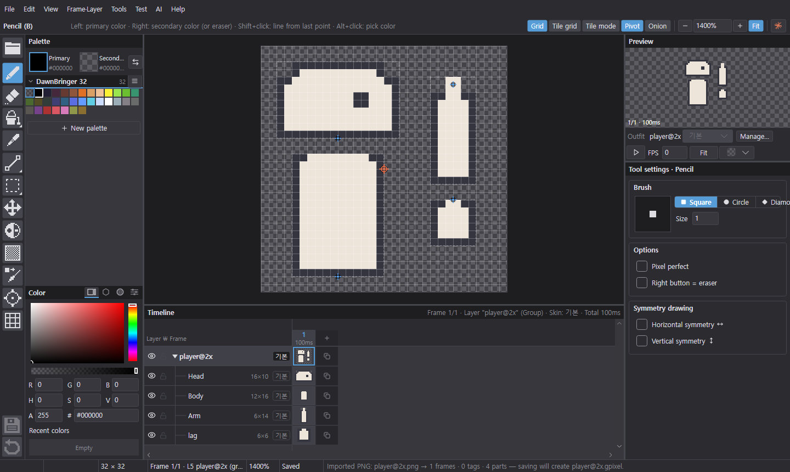
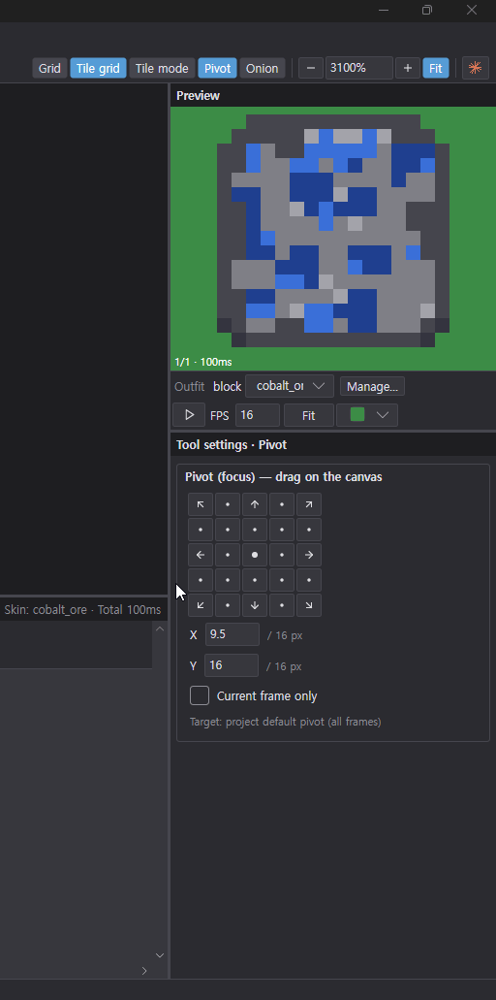

A pixel art editor
built for Unity 2D.
Draw frames, layers, parts and skins — every save writes a PNG sprite sheet and Unity .meta alongside.
Direct download: Windows · macOS (Apple Silicon) · macOS (Intel)

Key features
The features you'll use most, shown in action. Also in the guide under Quick tasks.
Changing number fields

Drawing with AI
Turning images into pixel art
Removing and adding colors
Stacking effects
Effect clipping
Importing Lospec palettes
Recoloring with a palette
Managing skins
Tile and item skins
Pivot sync
Export
What it does
Everything you need to draw sprites that go straight into your game.
Save straight to Unity
Every save writes a PNG sprite sheet and Unity .meta (slices and pivots included). Work right inside your Unity project folder.
Frames · Layers · Tags
Manage frames and layers on the timeline and split animations with tags. Check motion with onion skin and the live preview.
Parts and skins
Draw characters as parts like head, body and arms, and swap outfits and gear with skins. Exports Unity Sprite Libraries too.
Layer effects
From outline, shadow and glow to animated shake, explosion and fade — layered on without touching your pixels.
AI chat
Draw and edit by talking to Claude Code or Codex on your own computer. Uses your own account, no API key, and every step can be undone.
Palettes and languages
Import Lospec palettes and convert to a palette in one step. Korean and English built in; add any language yourself with a CSV.
Download
Unzip and run. The app tells you about new versions and updates itself.
If you see a signing warning on first launch, see First launch in the guide. What changed in each version is on the Releases page.